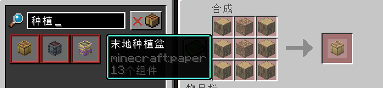

Starfall Town Guide
星露谷作物 / CustomCrops
种植、浇水、季节、品质与回收赚钱的玩家教程。
先看这里
先学什么
先记住：种植盆 → 种子 → 浇水/肥料 → 收获 这一条最基础流程。
先做什么
先把种植盆合成好，再去主城 NPC 买种子，之后按季节和温室规划农田。
重点提醒
不同作物对季节、盆子和摆放位置有要求，星露谷作物基本都需要先有对应的种植盆。
学完以后
你就能自己种田、稳定收获、卖作物赚钱，也能为料理和回收商店提供原料。
一分钟上手
- 准备种子：通过商店、任务、活动或服务器菜单获取对应作物种子。
- 先合成种植盆：星露谷种子只能种在对应种植盆上，不能直接种在普通耕地里。
- 放置种植盆：把种植盆放在合适位置后，再拿种子右键种植。
- 确认季节与环境：部分作物受季节限制，种之前先看当前季节提示。
- 照顾作物并收获：保持水分，搭配洒水器、肥料或温室玻璃；成熟后可获得普通/银星/金星品质。
种植盆规则
星露谷作物不是直接种在原版耕地上，玩家必须先在工作台合成对应种植盆，再把种子种到种植盆里。

如果你拿着种子右键普通耕地没有反应，不是 Bug，而是缺少对应种植盆。
常见工具
浇水壶：给作物补水洒水器：自动浇水肥料：提高产量/品质/成长速度稻草人：减少作物损失温室玻璃：辅助反季节种植
服务器作物清单
| 种子/入口 | 主要产物 | 玩法提示 |
|---|---|---|
| 卷心菜种子 | 卷心菜, 卷心菜（银星）, 卷心菜（金星） | 种植、浇水、等待成熟后收获；部分作物会产出银星/金星品质。 |
| 玉米种子 | 玉米, 玉米（银星）, 玉米（金星） | 种植、浇水、等待成熟后收获；部分作物会产出银星/金星品质。 |
| 绯红栓菌种子 | 绯红栓菌, 绯红栓菌（银星）, 绯红栓菌（金星） | 种植、浇水、等待成熟后收获；部分作物会产出银星/金星品质。 |
| 黄瓜种子 | 黄瓜, 黄瓜（银星）, 黄瓜（金星） | 种植、浇水、等待成熟后收获；部分作物会产出银星/金星品质。 |
| 茄子种子 | 茄子, 茄子（银星）, 茄子（金星） | 种植、浇水、等待成熟后收获；部分作物会产出银星/金星品质。 |
| 四季豆种子 | 四季豆, 四季豆（银星）, 四季豆（金星） | 种植、浇水、等待成熟后收获；部分作物会产出银星/金星品质。 |
| 韭葱种子 | 韭葱, 韭葱（银星）, 韭葱（金星） | 种植、浇水、等待成熟后收获；部分作物会产出银星/金星品质。 |
| 生菜种子 | 生菜, 生菜（银星）, 生菜（金星） | 种植、浇水、等待成熟后收获；部分作物会产出银星/金星品质。 |
| 洋葱种子 | 洋葱, 洋葱（银星）, 洋葱（金星） | 种植、浇水、等待成熟后收获；部分作物会产出银星/金星品质。 |
| 辣椒种子 | 辣椒, 辣椒（银星）, 辣椒（金星） | 种植、浇水、等待成熟后收获；部分作物会产出银星/金星品质。 |
| 菠萝种子 | 菠萝, 菠萝（银星）, 菠萝（金星） | 种植、浇水、等待成熟后收获；部分作物会产出银星/金星品质。 |
| 火龙果种子 | 火龙果, 火龙果（银星）, 火龙果（金星） | 种植、浇水、等待成熟后收获；部分作物会产出银星/金星品质。 |
| 摇钱树种子 | 红包, 红包 | 种植、浇水、等待成熟后收获；部分作物会产出银星/金星品质。 |
| 红薯种子 | 红薯, 红薯（银星）, 红薯（金星） | 种植、浇水、等待成熟后收获；部分作物会产出银星/金星品质。 |
| 番茄种子 | 番茄, 番茄（银星）, 番茄（金星） | 种植、浇水、等待成熟后收获；部分作物会产出银星/金星品质。 |
| 堇幽果种子 | 堇幽果, 堇幽果（银星）, 堇幽果（金星） | 种植、浇水、等待成熟后收获；部分作物会产出银星/金星品质。 |
| 幽碧兰种子 | 幽碧兰, 幽碧兰（银星）, 幽碧兰（金星） | 种植、浇水、等待成熟后收获；部分作物会产出银星/金星品质。 |
| 诡异发光菌种子 | 诡异发光菌, 诡异发光菌（银星）, 诡异发光菌（金星） | 种植、浇水、等待成熟后收获；部分作物会产出银星/金星品质。 |
赚钱建议
普通作物适合稳定出货，银星/金星作物适合攒一批后出售。红包和特殊番茄属于高价值产物，建议不要随手丢弃。
如果你看到作物无法种植，优先检查：是否种在对应种植盆上，其次再检查季节、空间、光照和水分。
常用入口
优先通过服务器主菜单进入作物、商店和回收相关功能；如果物品说明和 Wiki 不一致，以游戏内最新菜单为准。